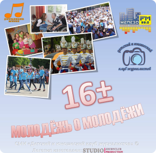

Sevimli radio stansiyalarınızı bir proqramda onlayn dinləyin, sevimli radiolarınızı əlfəcin kimi qeyd edin və hər zövqə uyğun musiqidən həzz alın. Yüksək səs keyfiyyəti, istifadəçi dostu interfeys, artıq heç nə yoxdur - bütün bunlar tamamilə pulsuzdur.
Tətbiq bölgənizdəki federal radio stansiyaları və radio stansiyalarını təqdim edir. Geniş kataloqdan radio seçin. Sevimli stansiyalarınızı sevimlilərinizə əlavə edin. Xüsusi nişanda son dinlənmiş radio stansiyalarına qayıdın. ,
Fəaliyyətinizdən yayınmayın: fonda sevdiyiniz musiqiyə qulaq asın.

“Radio” Jelezo FM” gənclər və pozitivlik komandasının “16±” (16 plus minus) layihəsini təqdim edir. Jeleznoqorskun gənc nəsli necə yaşayır, hansı musiqiyə qulaq asırlar və gələcək üçün hansı planlar qururlar?
Bu barədə "Jelezo FM" radiosu və "Jurnalistlərin Uşaq və Gənclər Klubu"nun birgə layihəsi olan "16±" radio şousunda öyrənəcəksiniz. Veriliş hər şənbə saat 18:00-da yayımlanır. Vaxt: 5 dəqiqə.